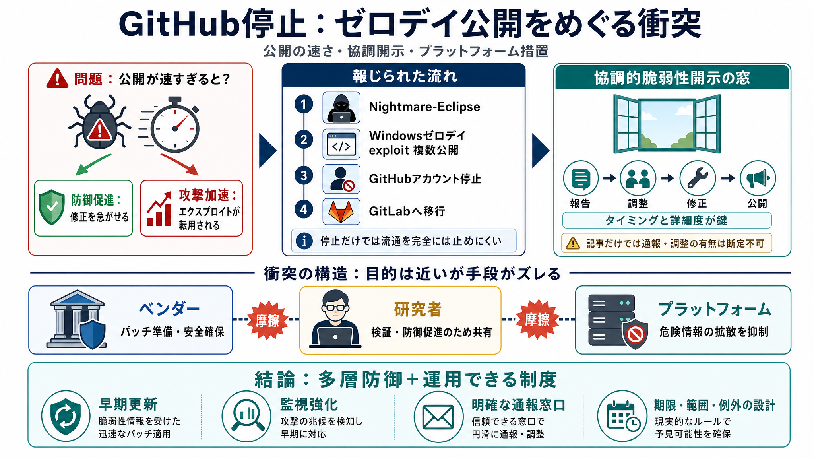

Nightmare-Eclipse: six zero-days, six weeks and one big grudge
Type a keyword and press enter to search [](https://blog.barracuda.com/2026/05/19/nightmare-eclipse-zero-days-grudge#). …

Type a keyword and press enter to search [](https://blog.barracuda.com/2026/05/19/nightmare-eclipse-zero-days-grudge#). …
Never miss a post from kek\_cybersec. Sign up for Instagram to stay in the loop. By continuing, you agree to Instagram's…
# BlueHammer: Inside the Windows Zero-Day That Turns Defender Against Itself. Home / Howler Cell / BlueHammer: Inside th…
... Microsoft exploit drops. Since early April, a researcher using the aliases Nightmare-Eclipse on GitHub and Chaotic E…
⚠️ Windows 0-Day Exploited to Deploy Play Ransomware (CVE-2025-29824) Threat actors associated with the Play ransomware …